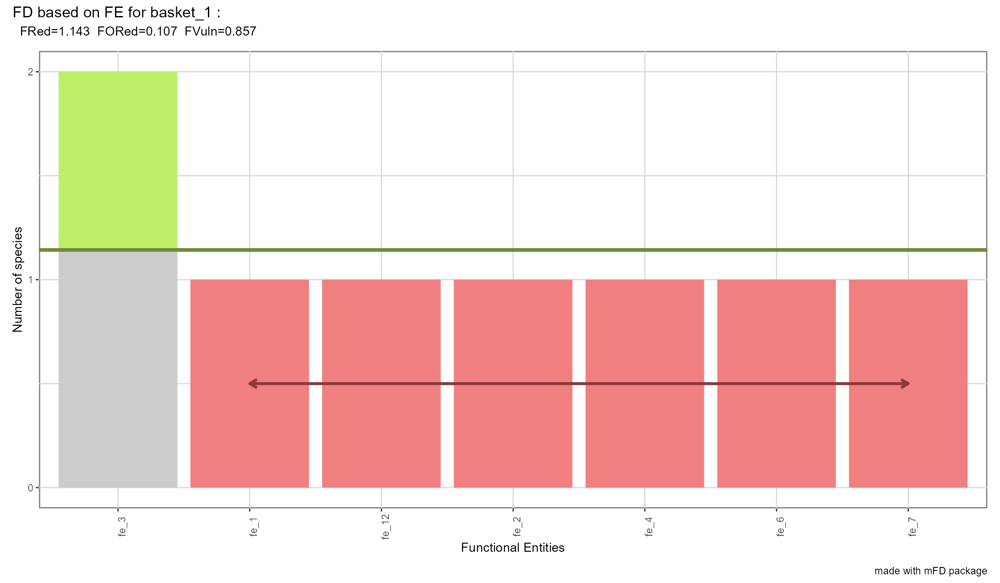

How to Deal With Functional Entities
Camille Magneville
2024-12-19
Source:vignettes/How_to_deal_with_Functional_Entities.Rmd
How_to_deal_with_Functional_Entities.Rmd1. Why Functional Entities (FEs)?
mFD allows gathering species into functional
entities (FEs) i.e. groups of species with
same trait values when many species are described with a few
categorical or ordinal traits. It is particularly useful when using
large datasets with “functionally similar” species. FEs also allow to
understand the links between functional diversity and ecological
processes as redundant species that are supposed to have similar
ecological roles are clustered in this method.
2. Tutorial’s data
DATA The dataset used to illustrate this tutorial is a fruits dataset based on 25 types of fruits (i.e. species) distributed in 10 fruit baskets (i.e. assemblages). Each fruit is characterized by six trait values summarized in the following table:
| Trait name | Trait measurement | Trait type | Number of classes | Classes code | Unit |
|---|---|---|---|---|---|
| Size | Maximal diameter | Ordinal | 5 | small ; medium ; large | cm |
| Plant | Growth form | Categorical | 4 | tree ; not tree | NA |
| Climate | Climatic niche | Ordinal | 3 | temperate ; tropical | NA |
| Seed | Seed type | Ordinal | 3 | none ; pip ; pit | NA |
NOTE We reduced the dataset used in mFD General Workflow to only keep ordinal and categorical traits. Categorical traits are restrained to 2 or 3 modalities per traits to limit the number of unique combinations.
The following data frame and matrix are needed:
- the data frame summarizing traits values for each species called fruits_traits data frame in this tutorial:
data("fruits_traits", package = "mFD")
fruits_traits <- fruits_traits[ , 1:4] # only keep the first 4 traits to illustrate FEs
# Decrease the number of modalities per trait for convenience ...
# ... (to have less unique combinations of trait values):
# Size grouped into only 3 categories:
fruits_traits[ , "Size"] <- as.character(fruits_traits[ , "Size"])
fruits_traits[which(fruits_traits[ , "Size"] %in% c("0-1cm", "1-3cm", "3-5cm")), "Size"] <- "small"
fruits_traits[which(fruits_traits[ , "Size"] == "5-10cm"), "Size"] <- "medium"
fruits_traits[which(fruits_traits[ , "Size"] == "10-20cm"), "Size"] <- "large"
fruits_traits[ , "Size"] <- factor(fruits_traits[, "Size"], levels = c("small", "medium", "large"), ordered = TRUE)
# Plant type grouped into only 2 categories:
fruits_traits[ , "Plant"] <- as.character(fruits_traits[, "Plant"])
fruits_traits[which(fruits_traits[ , "Plant"] != "tree"), "Plant"] <- "Not_tree"
fruits_traits[ , "Plant"] <- factor(fruits_traits[ , "Plant"], levels = c("Not_tree", "tree"), ordered = TRUE)
# Plant Origin grouped into only 2 categories:
fruits_traits[ , "Climate"] <- as.character(fruits_traits[ , "Climate"])
fruits_traits[which(fruits_traits[ , "Climate"] != "temperate"), "Climate"] <- "tropical"
fruits_traits[ , "Climate"] <- factor(fruits_traits[, "Climate"], levels = c("temperate", "tropical"), ordered = TRUE)
# Display the table:
knitr::kable(head(fruits_traits), caption = "Species x traits dataframe based on *fruits* dataset")| Size | Plant | Climate | Seed | |
|---|---|---|---|---|
| apple | medium | tree | temperate | pip |
| apricot | small | tree | temperate | pit |
| banana | large | tree | tropical | none |
| currant | small | Not_tree | temperate | pip |
| blackberry | small | Not_tree | temperate | pip |
| blueberry | small | Not_tree | temperate | pip |
- the matrix summarizing assemblages called basket_fruits_weights in this tutorial:
data("baskets_fruits_weights", package = "mFD")
knitr::kable(as.data.frame(baskets_fruits_weights[1:6, 1:6]),
caption = "Species x assemblages dataframe based on *fruits* dataset")| apple | apricot | banana | currant | blackberry | blueberry | |
|---|---|---|---|---|---|---|
| basket_1 | 400 | 0 | 100 | 0 | 0 | 0 |
| basket_2 | 200 | 0 | 400 | 0 | 0 | 0 |
| basket_3 | 200 | 0 | 500 | 0 | 0 | 0 |
| basket_4 | 300 | 0 | 0 | 0 | 0 | 0 |
| basket_5 | 200 | 0 | 0 | 0 | 0 | 0 |
| basket_6 | 100 | 0 | 200 | 0 | 0 | 0 |
- the data frame summarizing traits categories called fruits_traits_cat in this tutorial: (for details: mFD General Workflow)
data("fruits_traits_cat", package = "mFD")
# only keep traits 1 - 4:
fruits_traits_cat <- fruits_traits_cat[1:4, ]
knitr::kable(head(fruits_traits_cat),
caption = "Traits types based on *fruits & baskets* dataset")| trait_name | trait_type | fuzzy_name |
|---|---|---|
| Size | O | NA |
| Plant | N | NA |
| Climate | O | NA |
| Seed | O | NA |
Using the mFD::asb.sp.summary() function, we can sum up
the assemblages data and retrieve species occurrence data:
# summarize species assemblages:
asb_sp_fruits_summ <- mFD::asb.sp.summary(baskets_fruits_weights)
# retrieve species occurrences for the first 3 assemblages (fruits baskets):
head(asb_sp_fruits_summ$asb_sp_occ, 3)## apple apricot banana currant blackberry blueberry cherry grape
## basket_1 1 0 1 0 0 0 1 0
## basket_2 1 0 1 0 0 0 1 0
## basket_3 1 0 1 0 0 0 1 0
## grapefruit kiwifruit lemon lime litchi mango melon orange
## basket_1 0 0 1 0 0 0 1 0
## basket_2 0 0 1 0 0 0 1 0
## basket_3 0 0 1 0 0 0 1 0
## passion_fruit peach pear pineapple plum raspberry strawberry tangerine
## basket_1 1 0 1 0 0 0 1 0
## basket_2 1 0 1 0 0 0 1 0
## basket_3 1 0 1 0 0 0 1 0
## water_melon
## basket_1 0
## basket_2 0
## basket_3 0
asb_sp_fruits_occ <- asb_sp_fruits_summ$"asb_sp_occ"3. Gather species into FEs
mFD allows you to gather species into FEs using the
mFD::sp.to.fe() function. It uses the following
arguments:
USAGE
mFD::sp.to.fe(
sp_tr = fruits_traits,
tr_cat = fruits_traits_cat,
fe_nm_type = "fe_rank",
check_input = TRUE) - sp_tr the data frame of species traits
- tr_cat the data frame summarizing traits categories
- fe_nm_type is a character string referring to the way FEs should be named: they can be named after their decreasing rank in term of number of species (i.e. fe_1 is the one gathering most species) (fe_rank) or they can be named after names of traits
-
check_input is a logical value reflecting whether inputs
should be checked or not. Possible error messages will thus be more
understandable for the user than R error messages NOTE
Recommendation: set it as
TRUE
Let’s use this function with the fruits dataset:
sp_to_fe_fruits <- mFD::sp.to.fe(
sp_tr = fruits_traits,
tr_cat = fruits_traits_cat,
fe_nm_type = "fe_rank",
check_input = TRUE) mFD::sp.to.fe() returns:
- a vector containing FEs names:
sp_to_fe_fruits$"fe_nm"## [1] "fe_1" "fe_2" "fe_3" "fe_4" "fe_5" "fe_6" "fe_7" "fe_8" "fe_9"
## [10] "fe_10" "fe_11" "fe_12" "fe_13" "fe_14"- a vector containing for each species, the FE it belongs to:
sp_fe <- sp_to_fe_fruits$"sp_fe"
sp_fe## apple apricot banana currant blackberry
## "fe_3" "fe_2" "fe_7" "fe_1" "fe_1"
## blueberry cherry grape grapefruit kiwifruit
## "fe_1" "fe_2" "fe_1" "fe_8" "fe_9"
## lemon lime litchi mango melon
## "fe_4" "fe_5" "fe_10" "fe_11" "fe_6"
## orange passion_fruit peach pear pineapple
## "fe_4" "fe_12" "fe_13" "fe_3" "fe_14"
## plum raspberry strawberry tangerine water_melon
## "fe_2" "fe_1" "fe_1" "fe_5" "fe_6"- a data frame containing for FEs, the values of traits for each FE:
fe_tr <- sp_to_fe_fruits$"fe_tr"
fe_tr## Size Plant Climate Seed
## fe_1 small Not_tree temperate pip
## fe_2 small tree temperate pit
## fe_3 medium tree temperate pip
## fe_4 medium tree tropical pip
## fe_5 small tree tropical pip
## fe_6 large Not_tree temperate pip
## fe_7 large tree tropical none
## fe_8 large tree tropical pip
## fe_9 medium Not_tree temperate pip
## fe_10 small tree tropical pit
## fe_11 large tree tropical pit
## fe_12 small Not_tree tropical pip
## fe_13 medium tree temperate pit
## fe_14 large Not_tree tropical none- a vector containing the number of species per FE:
fe_nb_sp <- sp_to_fe_fruits$"fe_nb_sp"
fe_nb_sp## fe_1 fe_2 fe_3 fe_4 fe_5 fe_6 fe_7 fe_8 fe_9 fe_10 fe_11 fe_12 fe_13
## 6 3 2 2 2 2 1 1 1 1 1 1 1
## fe_14
## 1- a detailed list containing vectors or list with supplementary information about FEs:
sp_to_fe_fruits$"details_fe"## $fe_codes
## fe_1
## "SIZEsmall_PLANTnot_tree_CLIMATEtemperate_SEEDpip"
## fe_2
## "SIZEsmall_PLANTtree_CLIMATEtemperate_SEEDpit"
## fe_3
## "SIZEmedium_PLANTtree_CLIMATEtemperate_SEEDpip"
## fe_4
## "SIZEmedium_PLANTtree_CLIMATEtropical_SEEDpip"
## fe_5
## "SIZEsmall_PLANTtree_CLIMATEtropical_SEEDpip"
## fe_6
## "SIZElarge_PLANTnot_tree_CLIMATEtemperate_SEEDpip"
## fe_7
## "SIZElarge_PLANTtree_CLIMATEtropical_SEEDnone"
## fe_8
## "SIZElarge_PLANTtree_CLIMATEtropical_SEEDpip"
## fe_9
## "SIZEmedium_PLANTnot_tree_CLIMATEtemperate_SEEDpip"
## fe_10
## "SIZEsmall_PLANTtree_CLIMATEtropical_SEEDpit"
## fe_11
## "SIZElarge_PLANTtree_CLIMATEtropical_SEEDpit"
## fe_12
## "SIZEsmall_PLANTnot_tree_CLIMATEtropical_SEEDpip"
## fe_13
## "SIZEmedium_PLANTtree_CLIMATEtemperate_SEEDpit"
## fe_14
## "SIZElarge_PLANTnot_tree_CLIMATEtropical_SEEDnone"
##
## $tr_uval
## $tr_uval$Size
## [1] "medium" "small" "large"
##
## $tr_uval$Plant
## [1] "tree" "Not_tree"
##
## $tr_uval$Climate
## [1] "temperate" "tropical"
##
## $tr_uval$Seed
## [1] "pip" "pit" "none"
##
##
## $tr_nb_uval
## Size Plant Climate Seed
## 3 2 2 3
##
## $max_nb_fe
## [1] 364. Compute alpha and beta functional indices
Then based on the data frame containing the value of traits for each FE, the workflow is the same as the one listed in mFD General Workflow to compute functional trait based distance, multidimensional functional space and associated plots and compute alpha and beta functional indices (step 3 till the end). It will thus not be summed up in this tutorial.
mFD also allows to compute functional indices based on
FEs following the framework proposed in Mouillot
et al. 2014) using the mFD::alpha.fd.fe()
function. It computes:
- Functional Redundancy that reflects the average number of species per FE
- Functional Overredundancy that reflects the proportion of species in excess in species-rich FE ie it represents the percentage of species that fill functional entities above the mean level of functional redundancy
- Functional Vulnerability that reflects the proportion of FE with only one species
mFD::alpha.fd.fe() function is used as follows:
USAGE
mFD::alpha.fd.fe(
asb_sp_occ = asb_sp_fruits_occ,
sp_to_fe = sp_to_fe_fruits,
ind_nm = c("fred", "fored", "fvuln"),
check_input = TRUE,
details_returned = TRUE) It takes as inputs:
-
asb_sp_occ the assemblages-species occurrence dataframe
retrieved on step 2 with
mFD::sp.tr.summary()function -
sp_to_fe a list with details of species clustering into FE
from
mFD::sp.to.fe() - ind_nm a vector referring to the indices to compute: fred for Functional Redundancy, fored for Functional Overredundancy and fvuln for Functional Vulnerability.
-
check_input is a logical value reflecting whether inputs
should be checked or not. Possible error messages will thus be more
understandable for the user than R error messages NOTE
Recommendation: set it as
TRUE. - details_returned is a logical value indicating whether the user wants to details_returned. Details are used in graphical functions and thus must be kept if the user want to have graphical outputs for the computed indices.
Let’s apply this function with the fruits dataset:
alpha_fd_fe_fruits <- mFD::alpha.fd.fe(
asb_sp_occ = asb_sp_fruits_occ,
sp_to_fe = sp_to_fe_fruits,
ind_nm = c("fred", "fored", "fvuln"),
check_input = TRUE,
details_returned = TRUE) This function returns a dataframe of indices values for each assemblage and a detailed list containing a matrix gathering the number of species per FE in each assemblage:
# dataframe with indices values for each assemblage:
alpha_fd_fe_fruits$"asb_fdfe"## nb_sp nb_fe fred fored fvuln
## basket_1 8 7 1.142857 0.1071429 0.8571429
## basket_2 8 7 1.142857 0.1071429 0.8571429
## basket_3 8 7 1.142857 0.1071429 0.8571429
## basket_4 8 6 1.333333 0.1666667 0.6666667
## basket_5 8 6 1.333333 0.1666667 0.6666667
## basket_6 8 8 1.000000 0.0000000 1.0000000
## basket_7 8 8 1.000000 0.0000000 1.0000000
## basket_8 8 3 2.666667 0.4166667 0.6666667
## basket_9 8 3 2.666667 0.4166667 0.6666667
## basket_10 8 5 1.600000 0.1500000 0.4000000
# a matrix gathering the number of species per FE in each assemblage
alpha_fd_fe_fruits$"details_fdfe"## $asb_fe_nbsp
## fe_3 fe_2 fe_7 fe_1 fe_8 fe_9 fe_4 fe_5 fe_10 fe_11 fe_6 fe_12 fe_13
## basket_1 2 1 1 1 0 0 1 0 0 0 1 1 0
## basket_2 2 1 1 1 0 0 1 0 0 0 1 1 0
## basket_3 2 1 1 1 0 0 1 0 0 0 1 1 0
## basket_4 2 1 0 0 0 1 2 1 0 0 0 0 1
## basket_5 2 1 0 0 0 1 2 1 0 0 0 0 1
## basket_6 1 0 1 0 0 0 1 1 1 1 1 0 0
## basket_7 1 0 1 0 0 0 1 1 1 1 1 0 0
## basket_8 0 1 0 6 0 0 1 0 0 0 0 0 0
## basket_9 0 1 0 6 0 0 1 0 0 0 0 0 0
## basket_10 2 2 0 2 1 0 0 0 0 0 1 0 0
## fe_14
## basket_1 0
## basket_2 0
## basket_3 0
## basket_4 0
## basket_5 0
## basket_6 1
## basket_7 1
## basket_8 0
## basket_9 0
## basket_10 05. Plot functional indices based on FEs
Then, it is possible to have a graphical representation of FE-based
indices for a given assemblage using the
mFD::alpha.fe.fd.plot() function:
USAGE
mFD::alpha.fd.fe.plot(
alpha_fd_fe = alpha_fd_fe_fruits,
plot_asb_nm = c("basket_1"),
plot_ind_nm = c("fred", "fored", "fvuln"),
name_file = NULL,
color_fill_fored = "darkolivegreen2",
color_line_fred = "darkolivegreen4",
color_fill_bar = "grey80",
color_fill_fvuln = "lightcoral",
color_arrow_fvuln = "indianred4",
size_line_fred = 1.5,
size_arrow_fvuln = 1,
check_input = TRUE)This function takes as inputs:
-
alpha_fe_fe_fruits the output from the function
mFD::alpha.fd.fe()applied on assemblage of interest withdetails_returned = TRUE - plot_asb_nm a vector containing the name of the assemblage to plot
-
plot_ind_nm a vector containing the names of the indices to
plot. It
fredto plot functional redundancy (FRed),foredto plot functional over-redundancy (FOred) and/orfvulnto plot functional vulnerability (FVuln) -
name_file a character string with name of file to save the
figure. If set to
NULLthe plot is only displayed - inputs to personalize the plot (for details: see help file of the
mFD::alpha.fd.fe.plot) -
check_input is a logical value reflecting whether inputs
should be checked or not. Possible error messages will thus be more
understandable for the user than R error messages NOTE
Recommendation: set it as
TRUE
For the studied example, the plot looks as follows:
mFD::alpha.fd.fe.plot(
alpha_fd_fe = alpha_fd_fe_fruits,
plot_asb_nm = c("basket_1"),
plot_ind_nm = c("fred", "fored", "fvuln"),
name_file = NULL,
color_fill_fored = "darkolivegreen2",
color_line_fred = "darkolivegreen4",
color_fill_bar = "grey80",
color_fill_fvuln = "lightcoral",
color_arrow_fvuln = "indianred4",
size_line_fred = 1.5,
size_arrow_fvuln = 1,
check_input = TRUE)## Warning in ggplot2::geom_segment(ggplot2::aes(x = fe_vuln_k[1], y = 0.5, : All aesthetics have length 1, but the data has 7 rows.
## ℹ Please consider using `annotate()` or provide this layer with data containing
## a single row.
All FE except “fe_3” contain only one species thus FRed and FVuln are close to 1. Only “fe_3” has more species than the average number of species thus the proportion of species in excess in FE richer than average is quite low (FORed = 0.107).